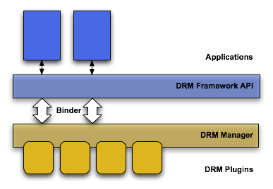
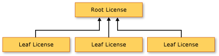

2 Windows Phone 的数字版权管理 (DRM) 4
2.2.1 Windows Phone DRM 联机概念性概述
2.2.4 使用 PlayReady 加密与 WMDRM 加密的注意事项
2.2.7 从 Windows Phone 应用程序指向DRM 内容
1 Ios和Android上的DRM
DRM概念：许多DRM的解决方案都使用共同的框架。.首先，内容被DRM加密模块处理(一般用AES128),然后许可控制模块提供给用户密钥和内容。应用这样的实现，你可以更加高效的分开内容的处理和访问权限的控制。下图表示了典型的DRM解决方案。
{kind=link}
Android平台提供了一个扩展的DRM框架。应用可以控制字节的版权的内容。DRM框架支持许多DRM方案，有些设备支持的DRM方案是生产厂商集成到系统中的。Android DRM 框架按照两层结构实现。
● DRM框架 API, 暴露给应用层供应用调用which is exposed to applications through the Android application framework and runs through the Dalvik VM for standard applications.
● 本地代码 DRM 管理, DRM框架实现并且暴露接口给DRM插件。解密DRM方案。

2 Windows Phone 的数字版权管理 (DRM)
2.1 DRM 方案
可以使用 DRM 来帮助您交付音频和视频内容，这样更安全且更好地保护内容不受未经授权的获取和再分发。这种保护机制可以集成到各种业务方案中，包括：
● 联机方案：这些方案要求用户在播放媒体内容时处于联机状态：
o 实时流处理：实时流处理也称为“真正的流处理”，它直接将内容发送到设备，而不将文件保存到硬盘。仅当广播时，实时流才可用。实时流处理的示例是 Internet 电视和广播。
o 渐进式下载：渐进式下载使用户能够在媒体正处于下载时进行播放。从用户的角度来看，渐进式下载与实时流处理之间的主要区别在于：渐进式下载的内容存储在用户的设备上（至少是临时存储）。
● 脱机方案：这些方案允许用户在播放内容时处于脱机状态。这些方案的确要求在用户的设备上安装脱机版 Windows Phone 运行时，并且确实要求用户处于联机状态（至少应间歇性联机），以便最初下载内容并重续订阅。
o 脱机下载文件（一次性购买）：用户从 Internet 下载内容，然后使用脱机版播放器播放内容。例如，一个联机视频商店向客户收取费用让其下载视频文件，用户可以在需要时在脱机版播放器中播放此文件。DRM 软件可以将视频文件的再分发限制为一台或多台设备。
o 租赁：您可以在 DRM 许可证中指定时间限制，以限制内容的播放。例如，某个联机视频商店可能提供其视频用于出租。一旦购买了租赁内容并下载了许可证，许可证就会在许可证签发之日起的 30 天之后或首次播放的 24 小时之后过期（以先到者为准）。
o 订阅：使客户能够根据订阅模型播放内容。例如，联机视频商店的客户支付每月费用，可联机观看最多 100 个小时的电视内容和下载最多 20 集电视剧。为了续订其订阅，客户需要支付每月费用，并每月至少需要连接到此服务一次，因为订阅许可证每 45 天就会过期。
2.2 Windows Phone DRM 联机方案
以下各节说明如何启用联机 DRM 方案。此处介绍的许多概念也适用于脱机方案。
2.2.1 Windows Phone DRM 联机概念性概述
2.2.1.1. Windows Phone 客户端访问内容
用户尝试在 Windows Phone 应用程序中播放某些存储在分发服务器上的受 DRM 保护的内容（分发服务器通常为 Web 服务器，用来分发您的内容）。客户端应用程序下载内容（如果是流，则为部分内容）和标头。
2.2.1.2. 用户的手机是否已“个性化”？
在请求许可证来解密内容之前，Windows Phone 必须先确定用户的设备上是否安装了适当的 DRM 软件。在播放任何受保护的内容之前，需要 DRM 客户端组件。个性化组件软件使客户端设备可以请求和使用 DRM 许可证。它还帮助保护在解密过程中用到的敏感数据。
如果客户端上还没有适当的个性化组件软件，客户端将自动向 Microsoft Individualization Service 请求该组件。获取个性化的组件软件的过程称为“个性化”。Windows Phone 通过向 Microsoft Individualization Service 发送信息来个性化用户的手机。用户可以阻止发送此信息。有关更多信息，请参见本主题后面的“错误处理”一节。
在安装了有效的个性化组件之后，客户端通常不需要再次进行个性化处理。对此，在手机上更新了 PlayReady 组件的情况是一个例外。
您可以使用 MediaElement.CurrentState 属性检测在某台设备上何时首次发生个性化。有关更多信息，请参见本主题后面的“检测 DRM 状态”一节。
2.2.1.3. Windows Phone 请求许可证
当客户端上存在有效的个性化组件软件时，就可以开始播放 DRM 了。当用户首次开始播放受保护的内容时，Windows Phone 客户端将联系 PlayReady 许可证服务器以获取许可证（许可证服务器由您或您的服务提供商控制）。如果许可证服务器批准该请求，则颁发许可证，客户端将使用该许可证来解密特定的媒体文件。之后，就可以播放内容了。
2.2.1.4. 手机需要加入域吗？（可选）
管理用户可在其上播放受 DRM 保护的内容的设备的过程称为“域管理”。域的管理是可选的，但此处之所以介绍它，是因为它可同时用在联机和脱机方案中。Microsoft PlayReady 域特性提供的这一功能对于最终用户体验而言很直观：服务提供商允许用户将一组计算机指定为一个域。
如果计算机对于内容具有域绑定的许可证，则域中的任何计算机都可以使用域中任何其他计算机获取的、受 Microsoft PlayReady 保护的内容。用户可以轻松地在域中添加或删除计算机，只要域中的计算机总数不超过此服务定义的限制即可。域管理可通过您所提供的 PlayReady 域服务器（域控制器服务器）来帮助完成。
2.2.1.5. 将许可证复制到持久性许可证存储区（可选）
许可证服务器可以确定是签发“一次性”许可证还是在使用者的手机上持续有效的许可证。在客户端上持续有效的许可证存储在一个在个性化期间于手机上创建的持久性许可证存储区中。在手机上存储许可证对于脱机方案尤其有用。
2.2.1.6. 播放内容
如果用于播放内容的许可证有效，则开始播放。
2.2.2 PlayReady 与 WMDRM 对比
Windows Phone 客户端可以使用两种形式的受 DRM 保护的内容：传统的 Windows Media 数字版权管理 10 (WMDRM 10) 和较新的 PlayReady。这种灵活性使得使用 WMDRM 10 SDK 加密的现有内容可以在支持 DRM 的 Windows Media 播放软件（如 Windows Media Player）中播放，以提供更高程度的内容保护。
2.2.3 使用 DRM 时的限制
即使您只打算使用 WMDRM 加密内容，也要注意您将需要至少一个 PlayReady 许可证服务器才能将许可证分发到客户端。
2.2.4 使用 PlayReady 加密与 WMDRM 加密的注意事项
在设置使用 DRM 的体系结构时，请谨记一些注意事项：
● 在对内容进行流处理时，您是从实时源中实时地进行编码和流处理，还是按需对预先加密的文件进行流处理？
● 您的客户使用其 Windows Phone 播放内容还是也使用 Windows Media Player？
● 您有希望用来为 Windows Phone 客户提供服务的大型 WMDRM 打包内容库（使用 WMDRM SDK 进行打包）吗？或者您能使用 PlayReady 打包您的全部内容吗？
● 是否要使用 PIFF 格式？在使用 PlayReady 时支持 PIFF。
无论这些注意事项的内容如何，如果您希望向 Windows Phone 提供 DRM 内容，都需要购买至少一个 PlayReady 许可证服务器；不过，这些问题的回答会决定您是能够仅使用 PlayReady 打包完成任务，还是还需要在整个 DRM 解决方案中处理 WMDRM 打包的内容。
● 流内容：如果您希望使用 PlayReady 实时对来自活动源的流内容进行编码，则可以使用第三方解决方案。此外，在此方案中可以使用 WMDRM。如果您正在使用 MediaStreamSource，则必须使用 PlayReady 打包的内容。
● 客户端播放器：如果您的客户只使用 Windows Phone 播放 DRM，则您可以使用 PlayReady 打包所有内容；但是，如果某些客户还使用 Windows Media Player 客户端，则还需要使用 WMDRM 加密。
● 您的内容库：无论您是否只在 Windows Phone 中播放内容，如果您不希望使用 PlayReady 来打包内容，则需要创建考虑 WMDRM 打包内容的 DRM 解决方案。
2.2.5 在 Windows Phone 中集成 DRM
对于流式下载或渐进式下载，需要通过以下步骤来将 DRM 集成到 Windows Phone 中：
1. 建立必需的服务器基础结构以提供受 DRM 保护的内容。
2. 使用 MediaElement 从 Windows Phone 应用程序指向这些受保护的内容。
3. 处理预期错误（例如，当用户不允许 DRM 内容时）。
4. 如果需要，基于 LicenseAcquirer 或 DomainAcquirer 类创建一个子类以获得自定义业务逻辑。
2.2.6 建立服务器基础结构
在使用 DRM 之前，您必须先打包要保护的内容，并使其可从分发服务器提供给客户端。可以使用打包软件执行此操作。有几个可用于打包内容的选项。下面列出了其中的两个选项：
● WMDRM 10 SDK。
● PlayReady Server SDK。
若要了解关于这些技术以及相关服务器配置的更多信息，请参见本主题前面的“PlayReady 与 WMDRM 的对比”一节。
加密和打包内容时，要指定许可证获取 URL (LAURL)。您可以在 Windows Phone 应用程序中重写此值，然后将许可证质询发送到许可证服务器。如果您有一个要用来同时为 Windows Phone 和 Windows Media Player 客户端提供该内容的 WMDRM 打包内容库，则这一点尤其有用。
2.2.7 从 Windows Phone 应用程序指向 DRM 内容
如果只使用 PlayReady 服务器来加密编码的内容，则可以仅使用 MediaElement 的 Source 属性来指向该内容。
这是因为使用 PlayReady Server SDK 打包的内容在其内容标头中包含授权服务器的 URI 位置。但是，如果您使用 WMRM SDK 来打包内容，则授权服务器的位置将不会包含在标头中，因此您需要指定此 URI。为此，请使用 LicenseServerUriOverride 属性为 MediaElement 的 LicenseAcquirer 属性指定用于查找许可证的 URI：
C#
myMediaElement.LicenseAcquirer.LicenseServerUriOverride =
new Uri("http://contoso.com/myLicenseServer.asmx", UriKind.Absolute);2.2.8 检测 DRM 状态
可以使用 MediaElementState 枚举来检测 MediaElement 所处的状态 - 具体而言，即 MediaElement 当前是正在对 Windows Phone 客户端进行个性化处理还是在获取许可证。检测这些状态的一个原因是，您可以为用户提供有关 MediaElement 准备播放内容时所发生的情况的反馈。例如，当正在进行个性化时或者正在使用 TextBlock 请求许可证时可以通知用户，如下面的示例所示。
C#
if (myMediaElement.CurrentState == MediaElementState.Individualizing)
{
myStateTextBlock.text = "Downloading DRM Client";
}
else if(myMediaElement.CurrentState == MediaElementState.AcquiringLicense)
{
myStateTextBlock.text = "Aquiring License";
}2.2.9 错误处理
DRM 相关的错误
下表提供了与 Windows Phone DRM 关联的错误的列表。下面所列的错误号在 6000 以上是连续的。请注意，除了通过 MediaElement 的 MediaFailed 事件完成的错误处理之外（如下所列），同步方法和属性可能直接引发异常，而异步方法可能通过其对应的 AsyncCompletedEventArgs 返回异常。
|
错误代码 |
注释 |
|
6000 |
MediaElement 未能播放受 DRM 保护的内容。 |
|
6001 |
该个性化组件软件未能下载到用户的手机。当 MediaElement 位于 Individualizing MediaElementState 中时，将发生此错误。出现此错误的一个可能原因是，设备无法连接到 Microsoft Individualization Server。 |
|
6002 |
许可证获取失败。当 MediaElement 位于 AcquiringLicense MediaElementState 中时，将发生此错误。出现此错误的一个可能原因是，设备无法连接到许可证服务器。 |
|
6003 |
未能安装个性化组件软件。 |
|
6004 |
Windows Phone 在客户端上的安装已过期并需要更新。 |
|
6005 |
处理文件头时失败。例如，文件头的格式可能不正确。 |
|
6006 |
在客户端上处理许可证失败。当 MediaElement 处于 AcquiringLicense MediaElementState 时，将发生此错误。 |
|
6007 |
PlayReady 许可证服务器允许服务器开发人员返回一个特定于服务的错误。例如，服务器可能返回以下错误之一：“您需要付账单了”、“此服务不可用”、“您已用完您的月流量”。从许可证服务器返回的 SOAP 异常在服务器添加的 CustomData 字段中具有额外数据。您需要在 Windows Phone 应用程序中编写应用程序逻辑来解释这一情况。这些响应主要在实现自定义许可证获取时使用（请参见本主题后面的“添加自定义逻辑”一节）。 |
|
6008 |
用户在客户端的配置设置中禁用了 DRM。 |
|
6009 |
超出了个性化处理的最大尝试次数。 |
|
6010 |
发生 DRM 协议错误。 |
|
6011 |
需要 DRM 许可证获取 URL 重写。 |
|
6012 |
发生 DRM 许可证获取重定向错误。 |
|
6013 |
用户的 HW 配置发生了重大变化，DRM 状态不再有效。 |
|
6017 |
用户尝试通过使用流来获取许可证（调用 AcquireLicenseAsync）；但是，流处于不受保护的内容中。 |
|
6021 |
DRM 系统不支持客户端操作系统。 |
|
6023 |
无法访问 IBX 服务。某些恶意软件/间谍软件会阻止对确保计算机的完整修补与保护的 *.microsoft.com 的调用。 |
|
6030 |
许可证包含不支持的许可证保护。 |
|
6031 |
受保护的视频输出连接的完整性受到危害或丢失。 |
|
6032 |
受保护的图形连接要求重新协商，但无法重新协商。 |
|
6033 |
已撤消的高带宽数字内容保护 (HDCP) 设备连接到视频输出。 |
|
6034 |
图形适配器或驱动程序已被篡改。 |
|
6035 |
在播放期间添加了新图形连接，因此播放停止。 |
|
6036 |
图形设备的驱动程序证书无效。 |
|
6040 |
此域已满，不允许用户向此域添加任何其他客户端。 |
|
6041 |
客户端不是域成员。 |
|
6042 |
域帐户标识符是未知的。 |
2.2.10 添加自定义逻辑
MediaElement 使用 LicenseAcquirer 类来处理针对 DRM 加密内容从 PlayReady 许可证服务器获取许可证的过程。您可以基于 LicenseAcquirer 类创建一个子类并添加自定义逻辑，例如，将您自己的自定义身份验证方案添加到许可证请求。
下面的示例演示如何重写 LicenseAcquirer 类（名为“ManualLicenseAcquirer”）并让 MediaElement 使用它来获取许可证。
XAML
C#
public partial class Page : UserControl
{
public Page()
{
InitializeComponent();
this.Loaded += new RoutedEventHandler(Page_Loaded);
}
void Page_Loaded(object sender, RoutedEventArgs e)
{
// Test a full fledged manual acquirer
// Set the LicenseAcquirer of the MediaElement to the custom License Acquirer
// defined in this sample.
myME.LicenseAcquirer = new ManualLicenseAcquirer(myME.Name);
// Set the License URI to proper License Server address.
myME.LicenseAcquirer.LicenseServerUriOverride = new Uri("http://contoso.com/myLicenseServer.asmx", UriKind.Absolute);
myME.MediaFailed += new EventHandler(myME_MediaFailed);
// Set the source of the MediaElement to the URL of the media encrypted with WMDRM.
myME.Source = new Uri("http://contoso.com/wmdrm_url.wmv", UriKind.Absolute);
}
void myME_MediaFailed(object sender, ExceptionRoutedEventArgs e)
{
string errorMessage = "";
if (e.ErrorException.ToString().Contains(" 6001 "))
{
errorMessage = "The individualization component software failed to" +
" download to the user’s phone. This error would" +
" come up when the MediaElement is in the Individualizing" +
" MediaElementState. One possible reason for this error is" +
" that the phone cannot connect the Microsoft" +
" Individualization Server.";
}
else if (e.ErrorException.ToString().Contains(" 6004 "))
{
errorMessage = " The installation of Windows Phone on the device is" +
" out of date and needs to be updated.";
}
else
{
errorMessage = "MediaFailed: " + e.ErrorException.Message + ".";
}
System.Windows.Browser.HtmlPage.Window.Alert(errorMessage);
}
// makes license request explicitly
public class ManualLicenseAcquirer : LicenseAcquirer
{
private string challengeString;
string _mediaElementName;
public ManualLicenseAcquirer(string mediaElementName)
{
_mediaElementName = mediaElementName;
}
// The default implementation of OnAcquireLicense calls into the MediaElement to acquire a
// license. It is called when the Media pipeline is building a topology and will be raised
// before MediaOpened is raised.
protected override void OnAcquireLicense(System.IO.Stream licenseChallenge, Uri licenseServerUri)
{
StreamReader sr = new StreamReader(licenseChallenge);
challengeString = sr.ReadToEnd();
// Need to resolve the URI for the License Server -- make sure it is correct
// and store that correct URI as resolvedLicenseServerUri.
Uri resolvedLicenseServerUri;
if (LicenseServerUriOverride == null)
resolvedLicenseServerUri = licenseServerUri;
else
resolvedLicenseServerUri = LicenseServerUriOverride;
// Make a HttpWebRequest to the License Server.
HttpWebRequest request = WebRequest.Create(resolvedLicenseServerUri) as HttpWebRequest;
request.Method = "POST";
// Set ContentType through property
request.ContentType = "application/xml";
// ADD REQUIRED HEADERS.
// The headers below are necessary so that error handling and redirects are handled
// properly via the Windows Phone client.
request.Headers["msprdrm_server_redirect_compat"] = "false";
request.Headers["msprdrm_server_exception_compat"] = "false";
// Initiate getting request stream
IAsyncResult asyncResult = request.BeginGetRequestStream(new AsyncCallback(RequestStreamCallback), request);
}
// This method is called when the asynchronous operation completes.
void RequestStreamCallback(IAsyncResult ar)
{
HttpWebRequest request = ar.AsyncState as HttpWebRequest;
// populate request stream
request.ContentType = "text/xml";
Stream requestStream = request.EndGetRequestStream(ar);
StreamWriter streamWriter = new StreamWriter(requestStream, System.Text.Encoding.UTF8);
streamWriter.Write(challengeString);
streamWriter.Close();
// Make async call for response
request.BeginGetResponse(new AsyncCallback(ResponseCallback), request);
}
private void ResponseCallback(IAsyncResult ar)
{
HttpWebRequest request = ar.AsyncState as HttpWebRequest;
WebResponse response = request.EndGetResponse(ar);
SetLicenseResponse(response.GetResponseStream());
}
}
} 2.3.3 租赁和订阅
启用租赁、订阅或同时启用两者比只是购买内容要更为复杂，因为您需要构建更复杂的 LicenseServer 逻辑来进行许可证管理。例如，如果用户下载他们所租赁的内容，则您需要在许可证中指定许可证何时以及在什么情况下过期。许可证可能在最初播放的 24 小时之后或下载的 30 天之后过期（以先到者为准）。
租赁和订阅协议存储在用户的持久性许可证存储区上的许可证中。在播放内容之前，需要找到和验证位于持久性许可证存储区上的正确许可证。在讨论如何遍历许可证之前，先了解许可证的不同类型以及如何将它们链接起来以启用特定方案。
2.3.4 根许可证、叶许可证和许可证链
许可证是保留资产（另一个许可证或一段内容）的解密密钥的数据文件。它还包含 DRM 权限和限制，这些内容定义如何可以使用它赋予访问权限的资产。许可证有三种不同类型：
● 简单许可证：从通过使用 PlayReady Server SDK 构建的应用程序中提供的 PlayReady 许可证，其中包含权限和限制以及用于关联内容段的密钥。
● 根许可证：控制一个或更多叶许可证的许可证。叶许可证控制着特定内容段的播放，而根许可证控制所有内容段的播放。例如，在订阅模型中，根许可证可能具有到期日期，而叶许可证则没有。当根许可证到期时，叶许可证将不可用，直至获得新的根许可证。
● 叶许可证：依赖于根许可证的简单许可证。
当您具有受单一根许可证控制的叶许可证时，就认为这些许可证构成了许可证“链”。下图说明这一概念：

现在讨论用户具有订阅并下载了若干视频供以后脱机播放的情况。对于每个视频，都有一个叶许可证指定允许使用该视频。在此情况下，我们假设叶节点规定用户可以随时播放此视频。但是，PlayReady 确保在允许播放之前具有有效的根许可证。如果根许可证过期（或许因为用户允许其订阅过期），则叶许可证不允许播放。这样，就可以使用根许可证来控制整个订阅（用户设备上的所有叶许可证）。
2.3.5 枚举许可证
您可以通过迭代永久性许可证存储区中的所有许可证（MediaLicense 对象）来检查许可证或许可证链是否过期。如果任何许可证需要更新，您可以添加逻辑以试图连接到授权服务器，进行必要的更新，并提示用户付款等等。
下面的示例演示如何检查是否需要续订订阅许可证。
C#
private void CheckSubscriptionRootForRenewal(Guid parentKeyId,
Uri licenseServerUrl)
{
DateTimeOffset renewalDate = DateTimeOffset.Now.AddDays(5);
// Query the licensemanager to see if we have a usable root license
IEnumerable myLicenses = LicenseManagement.SelectLicenses(parentKeyId);
bool renewRoot = true;
foreach (MediaLicense ML in myLicenses)
{
// If the license expires within the next 5 days,
// renew the subscription by requesting a new root license.
if ((ML.Usable) &&
(ML.ExpirationDate > renewalDate))
{
renewRoot = false;
break;
}
}
if (renewRoot)
{
LicenseAcquirer acquirer = new LicenseAcquirer();
acquirer.LicenseServerUriOverride = licenseServerUrl;
acquirer.AcquireLicenseCompleted += new EventHandler(acquirer_Completed);
acquirer.AcquireLicenseAsync(parentKeyId, ContentKeyType.Aes128Bit, Guid.Empty);
} 在此示例中，您将迭代永久性许可证存储区中的所有 MediaLicense 实例。MediaLicense 实例可以是以下任意一项：
● 许可证链（叶加根）
● 一个简单许可证
● 单个叶许可证（根许可证不存在）
● 单个根许可证（直接查询根）
下面的函数可用于筛选可能播放选项列表中向用户显示的内容列表，尤其是当用户处于脱机状态而无法获取新许可证时。它还可用于决定是否在进入脱机状态之前获得许可证。对于订阅客户，如果用户处于联机状态，则应首先调用 CheckSubscriptionRootForRenewal 函数（在前面的示例中）。
C#
public bool IsUsableLicenseAvailableForContent(System.IO.Stream contentFile)
{
bool returnValue = false;
// SelectLicenses works only if the user is running the Windows Phone app offline
// *and* elevated trust.
IEnumerable myLicenses = LicenseManagement.SelectLicenses(contentFile);
foreach (MediaLicense ML in myLicenses)
{
if (ML.Usable)
{
returnValue = true;
break;
}
}
return returnValue;
}